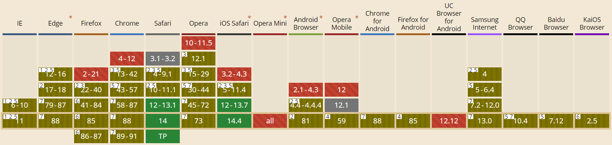

JS 前端的自定义右键与剪切板操作实现
本文分为两部分：自定义右键和剪切板的事件处理。主要目标是在自定义网页右键的基础上，实现诸如复制、粘贴的剪切板操作，文本选中的复制、图片的复制和输入框下的粘贴。
一、自定义右键
前端页面的自定义右键通过 oncontextmenu 实现，几乎所有浏览器都支持 oncontextmenu 事件。对全局右键的修改如下，可以在事件中放出自己的菜单，需要注意返回 false 用以阻止默认菜单弹出。
window.oncontextmenu = function (event) { |
1. 右键菜单的绘制
需要获取鼠标右键时所处的位置，并且控制自定义菜单不要超过屏幕的显示范围，判断菜单的长宽和屏幕。而元素在隐藏时是没有宽、高的，这里可以取巧通过控制层级先把菜单绘制出来，获取到 offsetWidth 和 offsetHeight 后再显示菜单（恢复正常的层级）。
2. 可能用到的方法
前文中，在 oncontextmenu 取到 event ，可以获取到所需要的内容。在 event 中，可以通过 event.target 得到右键下的元素信息。需要区分右键下是否为图片/链接，可以通过 href 和 currentSrc 判断等。
下面是一些可能用得到的属性/方法。
| 属性值/方法 | 用途 | 备注 |
|---|---|---|
event.target | 右键下的元素 DOM | |
event.target.href | 当前元素是否具有链接地址 | 用以判断链接 |
event.target.currentSrc | 当前元素是否具有图片链接 | 用以判断图片 |
event.target.parentElement | 当前元素的父元素 DOM | |
event.target.selectionStart | 当前元素选中内容起 | |
event.target.selectionEnd | 当前元素选中内容止 | |
$(event.target.href).is('input') | 判断当前选择是否为输入框 | .is('textarea') |
window.getSelection().toString() | 当前选中的文本 |
二、剪切板操作
Clipboard 接口实现了 Clipboard API，如果用户授予了相应的权限，就能提供系统剪贴板的读写访问。在 Web 应用程序中，Clipboard API 可用于实现剪切、复制和粘贴功能。

概括来说，浏览器对 Clipboard 接口的支持并不齐全。以读取剪切板来说：火狐来完全不支持 read() ，只有浏览器插件才允许使用，网页是无法调用的。而写入到剪切板 write() 和 writeText() ，火狐和谷歌均支持写入文本到剪切板，但是火狐不支持写入图片，谷歌虽然支持写入图片到剪切板，但是只能是 image/png 类型的图片。
Clipboard 接口实现了 Clipboard API，如果用户授予了相应的权限，就能提供系统剪贴板的读写访问。在 Web 应用程序中，Clipboard API 可用于实现剪切、复制和粘贴功能。如果用户没有适时使用 Permissions API 授予相应权限和"clipboard-read" 或 “clipboard-write” 权限，调用 Clipboard 对象的方法不会成功。
2.1 写入剪切板
由于 document.execCommand('copy') 还健在，所以我们在使用 Clipboard 外写一个兼容版本的复制，Clipboard 接口出错时通过传统方式写入剪切板。
首先是写入文本到剪切板，传统方式是生成一个不可见的 <input> 输入框，将待写入的内容放到输入框内，全选后复制最后再移除输入框。而利用 Clipboard 接口则不用那么麻烦了，原则上我们需要被授予 clipboard-write 权限，不过好在浏览器默认授权，故只需要直接读取即可，navigator.clipboard.writeText(str)。与右键搭配的话便是通过 window.getSelection().toString() 获取选中文本，接着将文本传递过去。
然后是写入图片到剪切板，相比较写入文本，写入图片则麻烦些，传统方式的写入是通过选中图片来实现的，也就是再 <img> 标签外需要有一个包裹它的父标签。而在 Clipboard 接口中，使用 write() 写入内容，我们需要传入 ClipboardItem 对象，指定 MIME 类型和 Blob 文件对象。然后是与右键的结合，我们可以获取右键下的图片链接，然后通过 fetch() 拿到这些信息。
2.2 读取剪切板
早期通过 document.execCommand('paste') 读取剪切板内容，不过由于安全性问题它已经被废弃。
因为博客没有什么支持富文本的地方，这里只使用 readText() 方法。我们通过 navigator.clipboard.readText() 获取文本内容，但在这之前为了用户体验，先查询当前网页是否被授予读取权限：通过 Notifications API 执行查询，它允许显示的查询或申请权限（Https 或本地测试环境），如果未被授权可以适当的给与提示等等。
2.3 写入到文本框
这是一个体外话，在实现粘贴、剪切等功能时，我们需要只操作选中的部分，也就是获得 selectionStart 和 selectionEnd ，在指定的光标处放置文本内容。
三、代码
综上，剪切板复制、读取的代码如下所示：
fn.readClipboard = async () => { |
fn.writeClipText = (str) => { |
fn.writeClipImg = async function(event, success, error) { |
fn.insertAtCaret = ($elemt, value) => { |